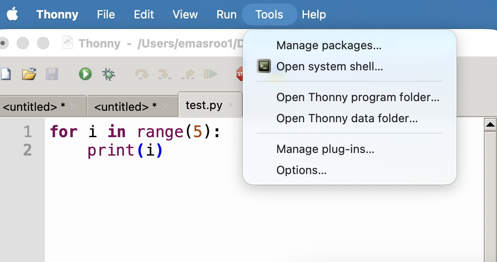
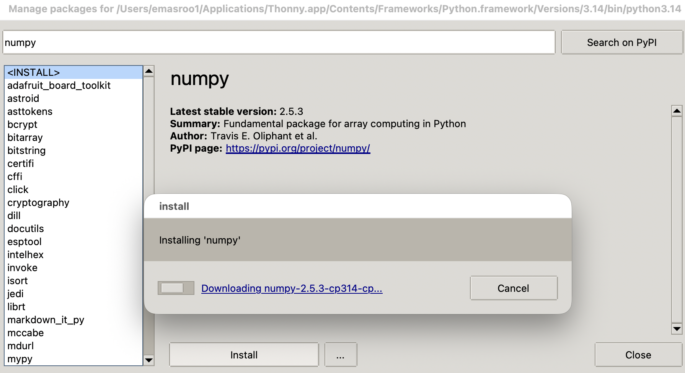
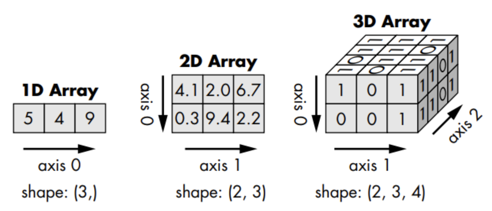

Lecture 09
E21 Computer Engineering Fundamentals
Test 1 + Survey
Installing numpy with Thonny Code Editor


numpy arrays
numpyarrays are objects of typenumpy.ndarrayThe
numpy.array()function createsnumpy.ndarrayobjects
>>> a = numpy.array([0.4, 6, -0.9])
>>> a
array([ 0.4, 6. , -0.9])
>>> type(a)
<class 'numpy.ndarray'>
>>> - Arrays in
numpyare similar to lists.- They can be indexed
- Their elements are mutable
- They are iterable — can be used with
forloops
- Arrays also have some differences compared to lists
- Unlike lists, one array can have only one type of element
- Appending is possible but discouraged — pre-allocate!
Importing the package
After installing
numpyfor your version of Python, you need to importnumpyin any code you write.A common approach is:
import numpy as np a = np.array([1,2.5,3])This shortens
numpy.<function name>tonp.<function name>and has no other function.Other approaches that work:
Import using full name
import numpy a = numpy.array([1,2.5,3])Import specific functions only
from numpy import array a = array([1,2.5,3])
numpy arrays are inherently n-dimensional
- In Python lists, we used the concept of a list of lists to encode two-dimensional information.
Native Python Approach
pattern3 = [["p", "p", "t", "g"],
["p", "p", "g", "t"],
["t", "g", "p", "p"],
["g", "t", "p", "p"]]
print(pattern3[1][2])numpy Approach
p= np.array([["p", "p", "t", "g"],
["p", "p", "g", "t"],
["t", "g", "p", "p"],
["g", "t", "p", "p"]])
print(p[1,2])- Looks similar, but now you should think matrix
- Access multi-dimensional arrays using the
[row,column]syntax - For example,
p[1,2]will give the string"g"
numpy arrays support vectorized operations
- In regular Python, lists aren’t very useful for manipulating many numbers.
- By default, the mathematical/boolean operators work element by element.
Native Python Approach
>>> f1 = [[0.3, 0.5, 0.6],
[0.2, -0.3, 0.7]]
>>> f1 + 100
Traceback (most recent call last):
File "<stdin>", line 1, in <module>
TypeError: can only concatenate list ...numpy Approach
>>> f = np.array([[0.3, 0.5, 0.6],
[0.2,-0.3, 0.7]])
>>> f + 100
array([[100.3, 100.5, 100.6],
[100.2, 99.7, 100.7]])
>>> f ** 2
array([[0.09, 0.25, 0.36],
[0.04, 0.09, 0.49]])
>>> f = np.array([[0.3, 0.5, 0.6],
[0.2,-0.3, 0.7]])
>>> g = np.array([[0.2, 0.5, -0.6],[0.2,-0.3,1.9]])
>>> f == g
array([[False, True, False],
[ True, True, False]])More about n-dimensional arrays

Numpy arrays have a property shape
>>> f = np.array([[0.3, 0.5, 0.6],
[0.2,-0.3, 0.7]])
>>> f.shape
(2, 3)
>>> np.shape(f)
(2, 3)- The shape tells you how many rows and columns an array has.
- If there are more than two dimensions, there is no name for the third and higher ‘rows/columns’.
numpy and floating-point binary numbers
By default, all numbers in
numpyare 64-bit floating point binary numbers.>>> a = np.array([0.3]) >>> type(a) <class 'numpy.ndarray'> >>> type(a[0]) <class 'numpy.float64'> >>>You can choose numbers with a different precision.
a1 = np.float16(3.2) a2 = np.float32(4.2) a3 = np.float64(5.2)
One-dimensional arrays vs. Two-dimensional arrays
from numpy.random import randomA 5-element 1-dimensional array
>>> a = random(5)
>>> a
array([0.57549695,
0.81646336,
0.80189814,
0.11415026,
0.62458897])A 5x1-element 2-dimensional array
>>> b = random((5,1))
>>> b
array([[0.32551251],
[0.54539388],
[0.97696562],
[0.53288049],
[0.13886612]])Manipulating Data in numpy
Download the data file here and look at the official documentation here
Consists of 3 days of temperature data recorded at half-hour intervals.
- Reformat the data in the form of an N rows, 2 column
numpyarray. - Save the data as
csvfiles for the three days separately.
array()zeros()reshapeappendflattentransposesavetxtloadtxt
Exploring floating-point numbers with numpy
Try out the following code and explain the behavior. Make sure you use immport numpy as np first.
z = np.float16(128)
z1 = np.float16(0.2)
print(z + z1 + z1 + z1)y = np.float16(16)
y1 = np.float16(0.2)
print(y + y1 + y1 + y1)v = np.float32(1048576)
v1 = np.float32(0.2)
v2 = v + v1 + v1 + v1
print(f"{v2:9.2f}")